Detecta tu hardware
Cuenta los núcleos, reconoce ARM64 o ARMv7, mide la RAM y los Hz, y nombra la GPU. Con eso arma el perfil de rendimiento.
Emulador de NES, Super Nintendo y Mega Drive: se ajusta solo a tu equipo, con control táctil por consola y juegos homebrew desde la app.
NES, Super Nintendo y Mega Drive que corren al máximo de tu TV box o celular, con juegos desde la app.
SumoRetro no incluye juegos comerciales. El catálogo de la app son juegos homebrew publicados por sus autores con licencia libre (MIT o GPL). Archive.org es de terceros: el filtro «solo homebrew» está activado por defecto; si lo quitás, pueden aparecer archivos que no tenés derecho a usar. La responsabilidad de lo que bajes o importes es tuya. Play Protect puede avisar al instalar fuera de Play Store. Esta 1.0.0 se probó en PC (motores, savestate y velocidad) y en la interfaz (pruebas automáticas); todavía no se probó en un TV box ni en un celular reales. Las capturas de juego con el control táctil superpuesto combinan un cuadro real del motor (renderizado en PC) con el control de la app.
SumoRetro usa FCEUmm y Beetle Supafaust (GPL v2 o posterior) y ClownMDEmu (AGPL v3 o posterior). Quien descargue o compre la app tiene derecho al código fuente completo de SumoRetro y de los motores (sin claves de firma). Lo podés pedir desde Contacto o bajarlo acá: Código fuente (AGPLv3 / GPL).
Lo mejor de SumoRetro: Turbo Auto-Tune mide tu TV box o celular (núcleos, arquitectura, RAM, GPU y Hz de la pantalla) y elige solo salto de cuadros, latencia de audio, video del Super Nintendo en 2 hilos y run-ahead. En Ajustes → «Optimizado para tu equipo» ves qué detectó y por qué. Motores libres de NES, Super Nintendo y Mega Drive, pensados para equipos como el MX10.
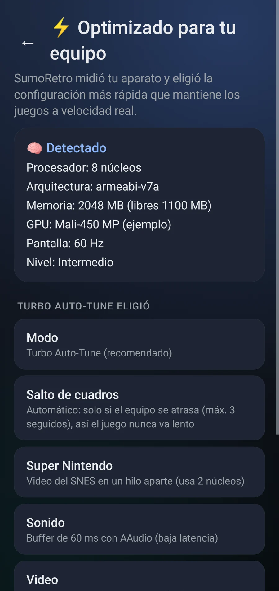
Un solo APK para Android TV / TV box con Android 9 o más (pensado para el MX10) y para celulares Android 9 o más nuevos.
Pago seguro con Mercado Pago · Sin publicidad · Pago únicoBotón de arrepentimiento
Pago seguro · Podés arrepentirte dentro de los 10 días.
Sin publicidad. Nunca.Pagás una vez y la app es tuya: sin banners, sin videos que te hacen esperar, sin interrupciones. Por qué cobramos
¿Te aparece un aviso al instalar (Play Protect u «orígenes desconocidos»)? Cómo instalar paso a paso — celular y TV.
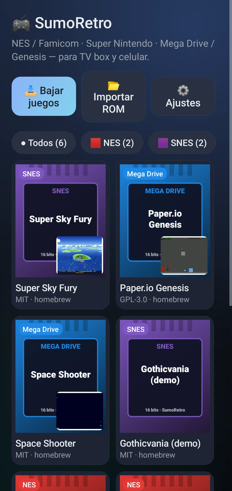
Biblioteca en el celular: portada y gameplay de cada juego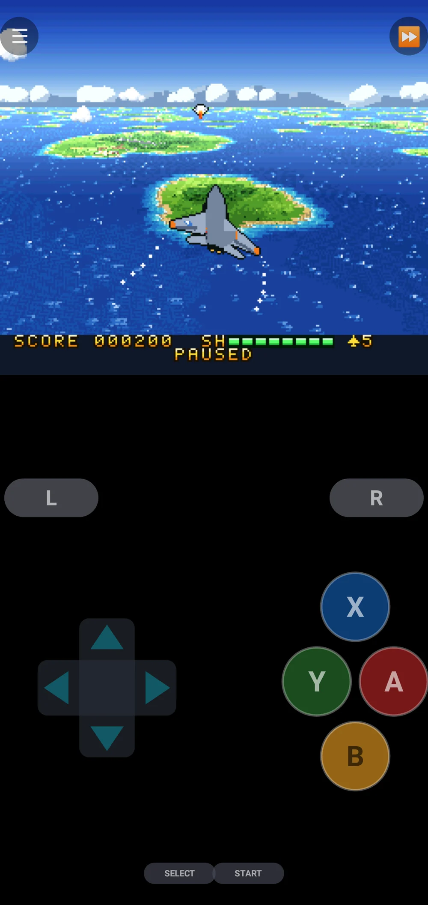
Super Nintendo en el celular, con el control abajo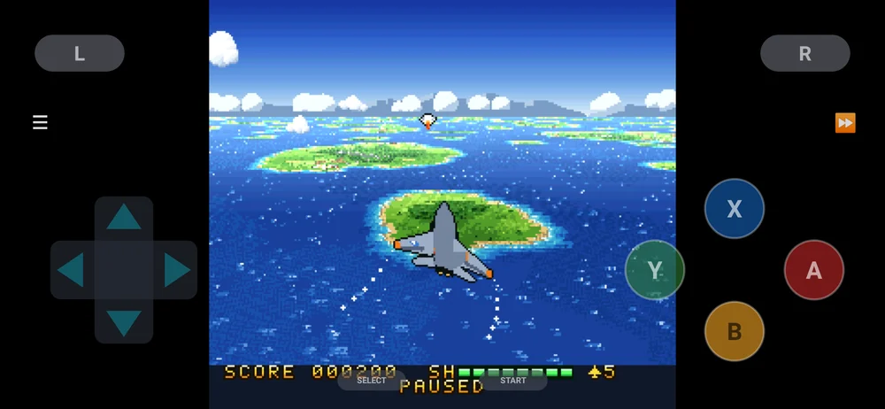
Super Nintendo con el control táctil (botones de colores y L/R)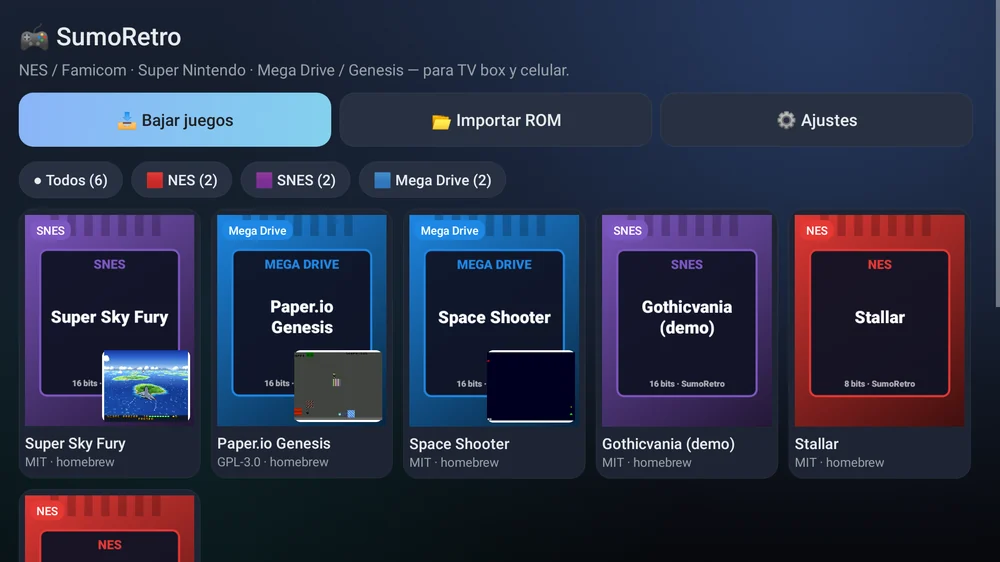
Biblioteca en la TV, manejable con el control remoto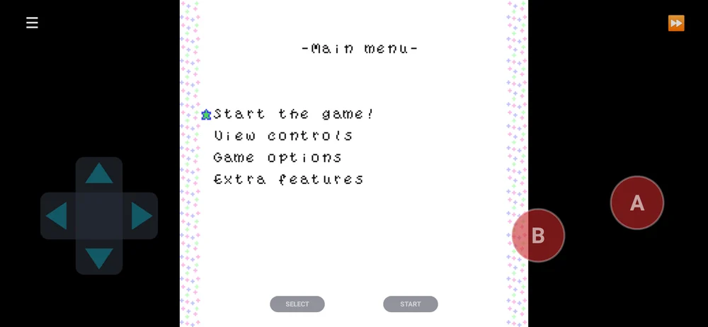
NES / Famicom con cruz, B y A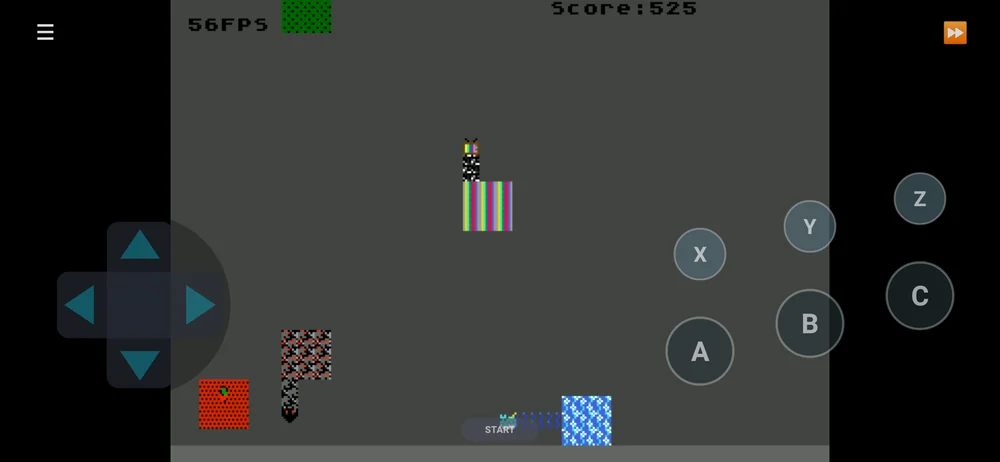
Mega Drive / Genesis con A B C y X Y Z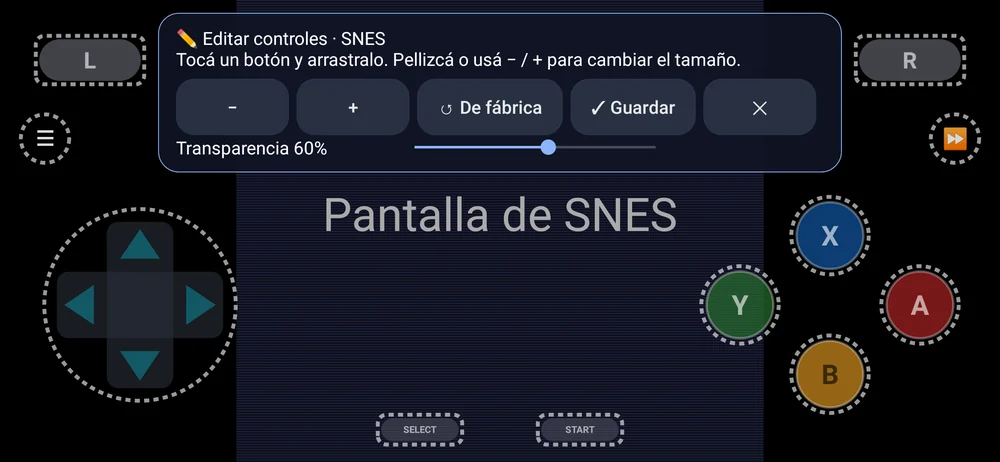
Editor: mové, agrandá y cambiá la transparencia de los botones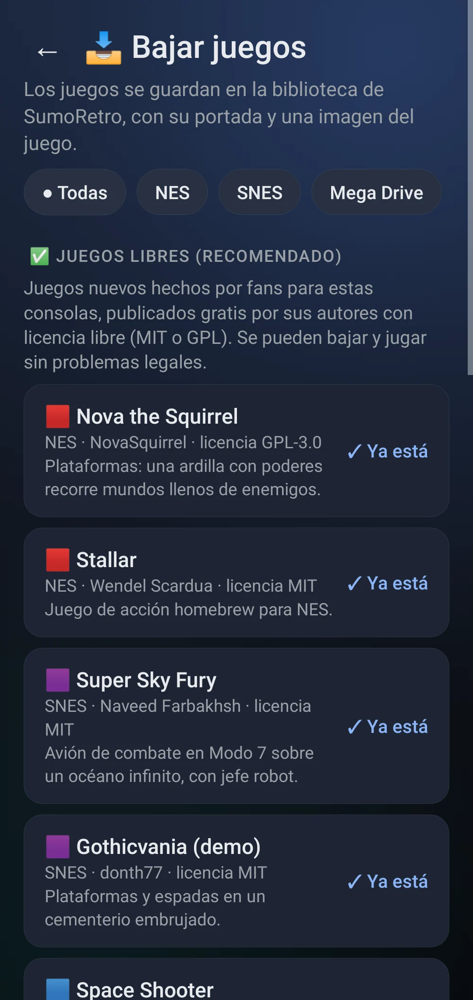
Catálogo de juegos homebrew libres, listos para bajar«Optimizado para tu equipo»: qué midió y qué eligió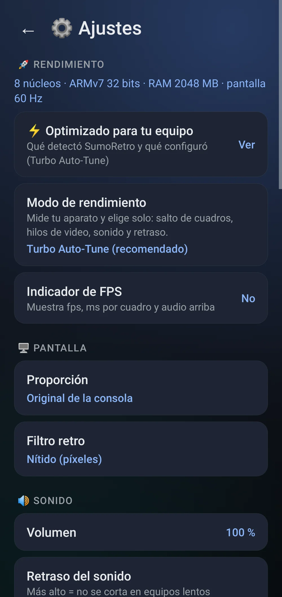
Ajustes de rendimiento, pantalla, sonido y controles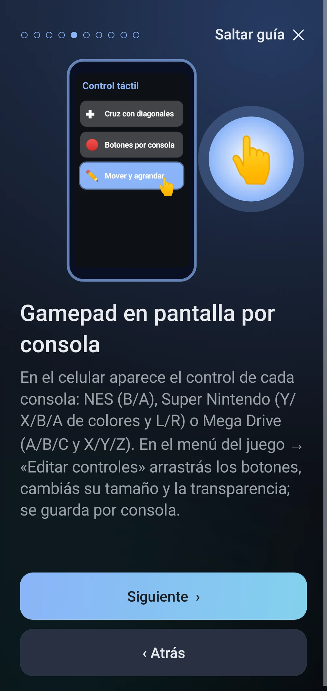
Guía «Cómo usar»: el control táctil por consolaCómo se optimiza según tu hardware, cómo se juega en el celular y en la TV, y de dónde salen los juegos.
Cuenta los núcleos, reconoce ARM64 o ARMv7, mide la RAM y los Hz, y nombra la GPU. Con eso arma el perfil de rendimiento.
Salto de cuadros automático si el equipo se atrasa (máximo 3 seguidos), buffer de audio de 60 u 80 ms, y en Super Nintendo el video puede ir en un hilo aparte (y run-ahead en equipos potentes).
NES (B/A), Super Nintendo (Y/X/B/A de colores y L/R) o Mega Drive (A/B/C y X/Y/Z). Se puede mover, agrandar y cambiar la transparencia; se guarda por consola. Con un gamepad, se esconde.
Flechas y OK en el control del TV; gamepads USB o Bluetooth se configuran solos (y se remapean). Teclado: flechas, Z X A S. Dos gamepads = 2 jugadores.
Catálogo de juegos homebrew con licencia MIT o GPL, listos para bajar. También Archive.org con filtro «solo homebrew» y aviso, o un link pegado. Importá tus ROMs con el selector del aparato.
Cada juego guarda una portada (de internet o dibujada) y una imagen del juego en acción, automática a los pocos segundos o la que elijas.
4 ranuras con miniatura, avance rápido, filtro nítido, suave o CRT, y ajustes por juego.
SumoRetro no trae juegos comerciales. El catálogo son homebrew libres. Lo que bajes o importes tiene que ser algo que tengas derecho a usar.
SumoRetro juega cartuchos de NES/Famicom, Super Nintendo y Sega Mega Drive/Genesis en tu TV box o celular, con motores libres (FCEUmm, Beetle Supafaust y ClownMDEmu) compilados nativo para ARM 32 bits, ARM 64 bits y x86_64. Turbo Auto-Tune detecta el procesador, la memoria, la GPU y la pantalla, y elige la mejor configuración; en Ajustes ves «Optimizado para tu equipo». Cada consola tiene su control en pantalla (se puede mover, agrandar y cambiar la transparencia; se esconde si conectás un gamepad). También se juega con el control remoto del TV, gamepads USB o Bluetooth (se configuran solos y se pueden remapear), teclado y 2 jugadores. Desde la app bajás juegos homebrew con licencia libre, o importás tus propias ROMs; cada juego guarda una portada y una imagen de gameplay. Partidas guardadas en 4 ranuras, avance rápido, filtro CRT y perfiles por juego. Guía «Cómo usar», temas de color y registro de errores. Sin publicidad.